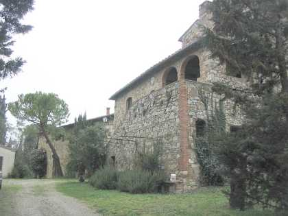
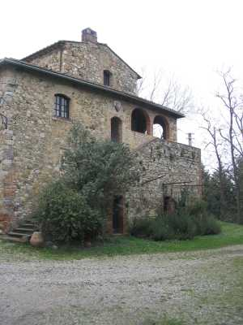
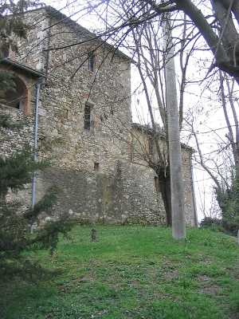
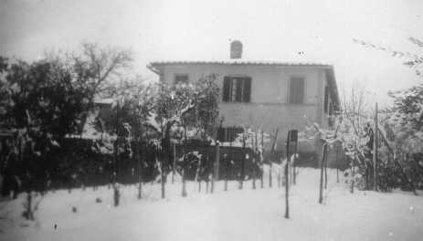
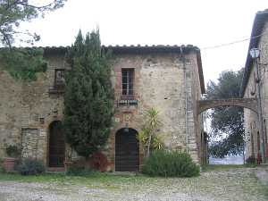
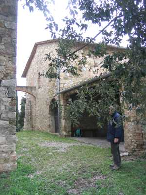
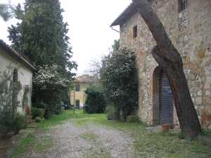

Quercegrossa (Ricordi e memorie)
CAPITOLO I - LUOGHI E PODERI
(CASTELLO)
Cliccami per ritornare all'Indice poderi
Vai all'Indice dei Capitoli
CASTELLO
Una veduta del Castello alla fine degli anni Sessanta del Novecento. Sotto alcune foto della parte più antica costruita sulle macerie del Castello senese e a seguire altre vedute.
Nel momento in cui la mezzadria stava vivendo i suoi ultimi decenni, la fattoria del Castello si presentava nel massimo della sua vitalità con tre poderi, un casiere e i proprietari che ormai vi dimoravano permanentemente fin dall’Ottocento. Un centro importante dove nel 1936, al tempo della Teresa Cerpi e di Giuseppe Vienni, vivevano pressappoco trenta persone tra i due fabbricati principali e la villa. Completavano l’ambiente la capanna e i castri. La fattoria si estendeva per ventisette ettari e le terre declinavano per tutte le direzioni. Un viottolo sassoso portava alla nuova fonte in muratura, usata dall’intero paese. Un grande fontone murato serviva da riserva d’acqua. Tutto era sorto dalle rovine del distrutto castello della Repubblica senese, e i contadini ivi residenti lavoravano le terre adiacenti l’antico Poggio di Quercegrossa; terre acquistate dal Comune di Siena ai primi del Duecento per la costruzione del castello e a quei tempi probabilmente molto boscose e da rendere coltivabili. Su quei terreni si aprì una modesta attività mineraria e si ricorda ancora una cava di zolfo, forse iniziata nell’Ottocento, e una di lapis rosso "che é una pietra dolce che contiene sostanza ferrigna", attiva al tempo del Pecci, nel Settecento. Saggi per trovare lignite ebbero esito negativo.



Acquisita la proprietà dai Benvoglienti nel XV secolo, dopo aver avuto il castello e le terre in affitto dall’Opera Metropolitana di Siena, questa famiglia risulta ancora possederle quando il Castello non è che un cumulo di rovine e si deve certamente a loro il recupero di parte degli edifici dell’ex fortezza e la riduzione a casa colonica di essi, come li descrive il Pecci nel Settecento che vede "una sbassata torre, ridotta a colombaia" e precisa che "dentro al rasato recinto è una sola casa": è la stessa che ancor oggi svetta sull’ambiente circostante. Si tratta quindi della prima abitazione per i coloni, dei quali abbiamo notizie fin dal Cinquecento.A questa antica costruzione, alla quale si addossa nella parte a Mezzogiorno una posteriore loggia ad arco con scala d’ingresso e altro edificio a Tramontana, si aggiungeranno in seguito altri fabbricati ad uso colonico e padronale. Infatti, il catasto del 1825 ci mostra un ambiente già modellato come noi lo vediamo oggi, con una casa colonica di 1092 bq. (371 mq.), l’antico nucleo; altra casa e aia di 1056 bq., e casa di 576 bq. (195 mq.) accompagnata dall’annotazione "diventerà casa padronale", ossia la villa. Questo edificio iniziato probabilmente tra la fine del Settecento e l’inizio del nuovo secolo dai Curini, come modesta residenza estiva, sta per essere trasformato in villa dai nuovi proprietari Nencini che più tardi modificheranno un ambiente interno in oratorio.

A una sommaria descrizione la villa si presenta con a sinistra la Cappella, al centro il portone di ingresso con scala, ed entrando a destra lo scrittoio della fattoria. "Tuttintorno frutteto con la carciofaia dietro casa e susini, peri e peschi". Si citano inoltre nelle note catastali un resede e altro resede con gelsi accanto alla casa padronale. Continuando la storia padronale, vediamo che tra i Benvoglienti, Tradita è padrona nel 1570, Girolamo verso il 1590 e nel 1615 risulta Dianora vedova. Nel Seicento fanno la loro comparsa i Tantucci e senz’altro acquisiscono la proprietà alla morte di Anna Benvoglienti avvenuta in Siena il 15 novembre 1622, sposa di Francesco Tantucci. Ai Tantucci subentrano i Soldateschi sul finire del secolo; i Soldateschi sono accomunati al cognome Ricchetti. Nel 1723 la proprietà è divisa tra le due figlie di Giuseppe Soldateschi, Leandra e Iacinta, quest’ultima maritata a Niccolò Curini, i cui eredi saranno i futuri padroni. Dopo di loro e con l’Ottocento, la proprietà passa a Francesco Bartalini e successivamente alla famiglia Nencini, ancora una famiglia senese. Da Domenico Nencini ad Antonio e nel 1839 alla figlia Teresa coniugata a Bernardino Cerpi che di fatto pochi anni dopo diviene il vero padrone e la proprietà, pur restando alla moglie, è attribuita generalmente al Cerpi. Alla morte di Angela nel 1871 il tutto passa ai figli Paolo ed Egidio Cerpi, e il 14 ottobre 1879, per assegnazione di quota, diventa titolare del Castello Maria Pierallini, moglie di Egidio Cerpi. Egidio è padrone nel 1880 anche di Quetole, che però venderà nello stesso anno e si dedicherà all’amministrazione del Castello. Trascorrono quarant’anni poi muoiono Egidio nel 1920 e Maria Pierallini il 31 dicembre 1922. In conseguenza Teresa Cerpi eredita il Castello, dove continua a vivere e dove si sposa con Giuseppe Vienni che diventerà solerte padrone e attivissimo industriale agricolo fino al 1939. Poi, per volontà della moglie, il Castello viene venduto e passa a Edoardo e Pietro Pratellesi. I due fratelli, padroni e fattori, gestiranno insieme la proprietà, ma sarà la superstite vedova di Pietro, la signora Marietta, ad occuparsi degli ultimi mezzadri negli anni Sessanta.



Tre contadini negli ultimi anni, ma per diversi secoli al Castello ha dimorato soltanto una famiglia di lavoratori mezzadri, e si deve compiere un bel salto e andare al 1859 per trovare una pigione per il casiere dei Cerpi. Un contadino quindi, con buon numero di familiari, sempre sopra dieci nell’Ottocento, e un casiere che lavorava anche qualche pezzo di terra d’intorno alla fattoria, e questa situazione si sbloccherà soltanto con il Vienni che modificherà gli stabili rendendoli adatti ad ospitare tre famiglie di contadini in altrettanti poderi detti Castello I, II, e III. Il primo colono di cui abbiamo notizie è appellato semplicemente "Battista" nel 1570, e nel 1592 Iacomo Tamenti che denuncia un raccolto di grano nel podere di 3 moggia pari a 15 quintali. Dopo di lui abbiamo nel 1615 Gosto di Pietro Lenzi, i Niccolini a metà Seicento, poi Bianciardi e Guerranti. La storia continua e nell’Ottocento troviamo i Buti e i Bogi, tra i cognomi più conosciuti, mentre col Novecento sono contadini i Landi, i Politi, i Dei e i Granai. Nel 1936 vi abitano le famiglie Granai, Mugnaini e Bandini. Nel dopoguerra si alternano una quindicina di famiglie in due decenni, sintomo del malessere della mezzadria, e si ricordano i Pagni, i Corbini, i Cantelli, i Bruni, i Pistolesi, i Borgianni, i Ciampoli, i Costanzi, i Ricci, i Micheli, i Ceccarelli, i Carapelli e i Guideri, con qualche altro pigionale dimenticato da tutti. Il Castello "era diventato un porto di mare".
La capanna del Castello e i castri col giovane Benito Bandini e altro bambino in posa
Capitolo successivo Colombaiolo
Inizio pagina
Vai all'Indice dei Capitoli
|